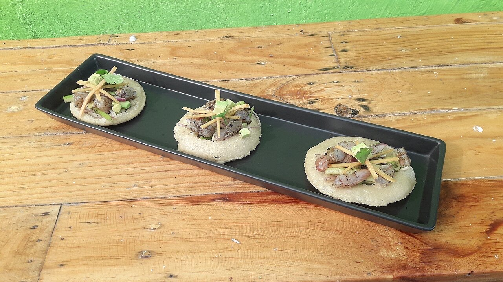

Fotografias ilustrativas — no site final usamos as vossas.
Petiscos para a mesa toda, com ceviche e opções vegetarianas.
4,6★ em 2 056 avaliações no Google.
Por QR code, sem esperar pela equipa.
O AMU.TE fica na Praça de São Tiago, no centro histórico de Guimarães, mesmo em frente aos arcos. É um bom sítio para petiscar com amigos até à meia-noite.

Fotografias ilustrativas — no site final usamos as vossas.
Novo · Pedidos por QR code
Menos espera nas horas de ponta, menos enganos nos pedidos e a equipa livre para servir.
Pedido de reserva
Escolha o dia e a hora — o pedido chega por WhatsApp e confirmamos logo.
↑ Assim chegaria a mensagem ao vosso WhatsApp. (Nesta demonstração nada é enviado.)
Onde estamos
| Seg–Sáb | 11:00–00:00 |
|---|---|
| Dom | 17:00–00:00 |
Proposta para AMU.TE
Esta página foi feita de propósito para AMU.TE por João Machado, programador web aqui de Guimarães. Inclui:
Eu trato do alojamento e da manutenção. Sem compromisso.